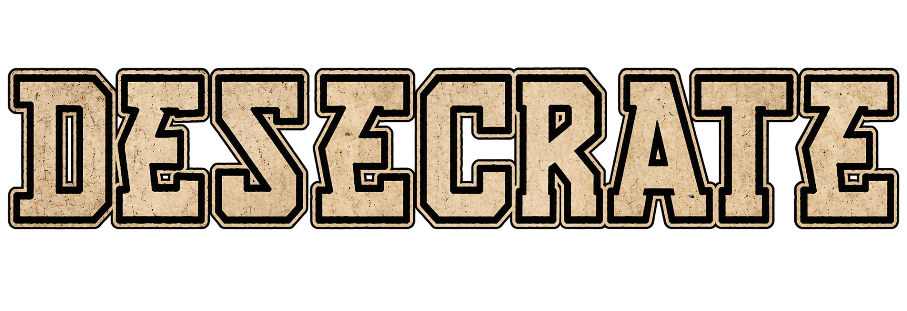
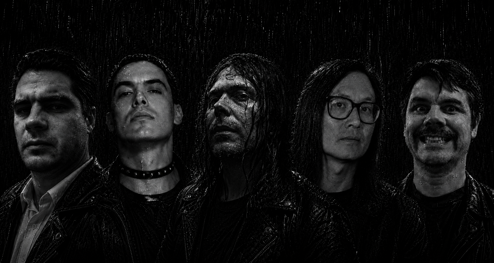
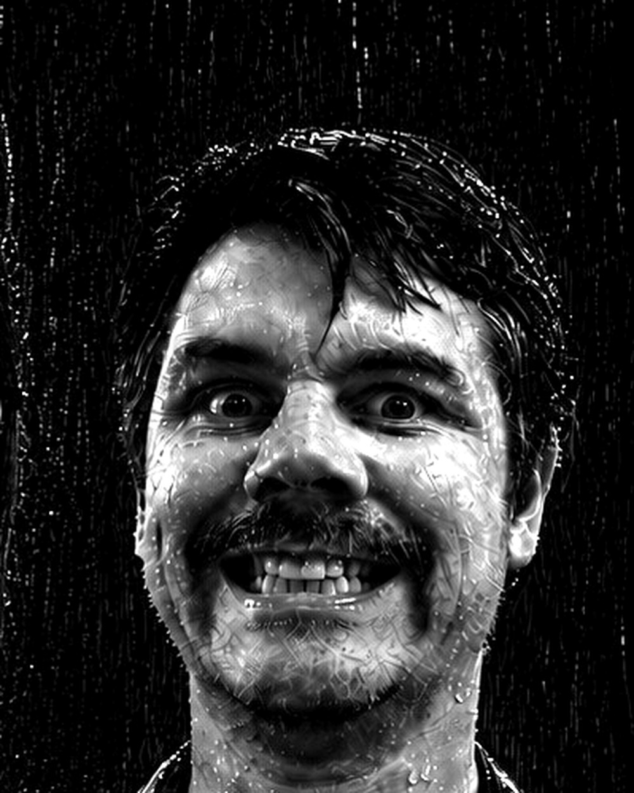
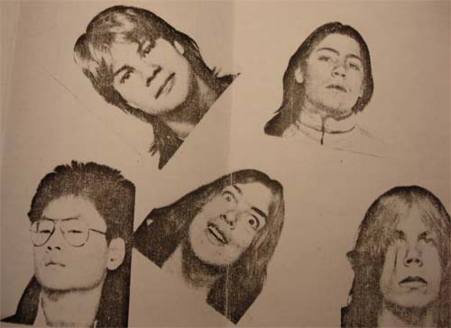

D
UPPSALA · SWEDEN
DESECRATE
Active through 1990. Three surviving demos, a lost session and changing live lineups before the songs returned in 2026.

Thirteen songs from Desecrate's first era, rebuilt more than three decades after the band disappeared.

PROMO IMAGE · SECOND DEATH · 2026From the Portastudio tapes to the lost Second Death songs and the 2026 return.
Thirteen songs from Desecrate's past, recorded again more than three decades later.
The musicians who passed through Desecrate during the original era.
Active through 1990. Three surviving demos, a lost session and changing live lineups before the songs returned in 2026.
Founder and guitarist. Guitar and bass on the first demo; guitar on the 1989 recordings.

Lead vocalist throughout the original demo period and the live lineups between them.

Drummer in the original trio and throughout Desecrate's original era.
Joined in 1989, first on bass and later on guitar. Dave Janney died in 2008.

Joined on bass for Lonely Disgrace, the final documented studio demo of the original era.

Expanded the live lineup and played lead guitar on Arranger of Disorder.

Bassist in the second lineup, used for live performances after the first demo.

FROM THE ARCHIVEDesecrate grew out of Uppsala's late-eighties underground. Rickard Ceder wanted to make harder music and began working with Jakob “Kobben” Bergström on the first Portastudio recordings. John Swahn was brought in on vocals.
We Only Make Jokes...We Made You. First concert at Storvreta Fritidsgård on 25 November.
Arranger of Disorder in May and Lonely Disgrace in December.
Differences over direction led to the split. Final show at the old fire station in Knivsta.
The old material is rebuilt as the full-length album Second Death.
Flyers, demo inserts, band photographs and contemporary fanzine material from the first era.